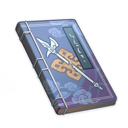

Legend of the Shattered Halberd¶

Author: Mr. Nine
Vol. 1 - Pressing Official Business¶
Note
In ancient times when Axis Mundi was unobstructed, there were nine realms, each a world of its own. The realm of humans was known as the Zhongzhou, while the gods reside in Shenxiao.
At the end of the last calamity, a war between the gods broke out. The God King fell, setting the nine realms ablaze, obliterating all living things. The realms have now been born anew, life again thrives, but the passageway between the nine realms by Axis Mundi has been sealed off.
An all-new graphic novel on the epic journey in search of the God-King's Halberd begins!
"I am the Great and Glorious General Weiyang, emissary of the imperial court on a royal mission! I demand that you step aside at once!"
"General? So the Great and Glorious is a military rank now, huh? I thought it was a civil office." Mir responded with not a moment's hesitation.
Weiyang's face turned bright red. "Oh!? An ignorant borderland heathen seeks to educate me on the matters of the court!?"
Mir was unfazed. "I would be surprised if they'd overhauled the entire government bureaucracy in the space of a few years."
Two broad-sword-wielding Martial Artists in Weiyang's party burst out laughing. "Haha! So ends our grand journey to the capital... The cart finally makes it past a thousand miles of checkpoints, only to get gridlocked like this at some tiny little inn out in the wilderness!"
The waiter, Qin, stared intently at Weiyang's crimson-colored cheeks before suddenly declaring: "You're a woman! A female officer disguised as a man!" The claim was accentuated with a prod of his finger.
"An astute observation," came the response from one of the martial artists. "She is in fact the Secretary of Ceremonies. The two of us are military officers. One from the Imperial Guards, the other from the Imperial Escorts, both versed in polearm and sword. We are serving the office of the Imperial Grand Minister on secondment, and we are here under orders to retrieve the Ominous Swords."
"Although the part about the Great and Glorious Gen... General, haha... Although that's made up, the bit about being here on official court... uh, business is not," the other Martial Artist chimed in to say.
The Ominous Swords were something that Mir had heard of. The story was that an iron meteorite had fallen from the sky five or six years ago, and convention dictated that as nature's treasure it belonged to the imperial family. However, a swordsmith by the name of Feng had taken it for himself and used it to illegally cast nine swords. It was said that the Ominous Swords were cursed by the meteorite and could drain people's intellect. Naturally, they had caused quite the stir in martial artists' circles.
"Good for you," said Mir as he shut the toilet door.
"It'd be even better for me if you got yourself out from that toilet... now!" Her disguise exposed, Weiyang gave up trying to compose herself and spoke in her normal voice. She sounded more charming than one would expect, given the circumstances.
"Officer Weiyang is a cultured lady of the court. Unlike us, she cannot resolve her pressing official business by simply finding a discrete spot in the wild. Please, hurry up!"
Mir washed his hands and exited the toilet, then sat down at the table with the two Martial Artists.
"It is not at every border town that we encounter one so familiar with court affairs." The one that seems to be the Imperial Escort officer sizes up Mir. "Might I inquire as to your personal history?"
"My father, Mi Tingren, was Minister of Imperial Banquets. He was framed for embezzlement of funds intended for the imperial cuisine. He then resigned from his post and returned home." Mir paused to scratch his chin before continuing, "My old man's not been himself ever since it happened. I still intend to go back to the court one day and clear the Mi family name."
Vol. 2 - A Matter of Possession¶
Note
Mir, having stumbled onto the journey to retrieve the swords by accident, encountered a huge crisis before the journey had even begun. Imperial Guard and Imperial Escort elites were slain by enemies holding the Ominous Swords. Amidst grave danger, Mir recalled a spell taught by his father. Legend has that, the Celestial Emperor has a young daughter whose name was not known to the world; she now possessed Weiyang's body and revealed herself. Who would prevail? The wielders of the Ominous Swords who had turned into ferocious demons? Or Mir who could somewhat hold his own in a fight?
"Yum. Very nice."
Now that the spirit had possessed her body, Weiyang was of a much sweeter and gentler disposition. She took a tiny bite of one of Mir's stuffed pies, but it was too hot, so in an effort to avoid burning her tongue she stuck it out of her mouth and panted for breath frantically. Truth be told, it was all rather cute.
"That came unexpectedly. I need some time to process." Mir, who had given up one of his eyeballs to appease the spirit, helped himself to a pie and asked, "Can you go over it again?"
"Very well. The 'meteorite' was in fact a Divine Halberd. It was snapped into pieces by a commoner and made into nine cursed swords — the Ominous Swords. This one is the Sword of Mist, adding in that pair I've found three of them to date."
"And what's your place in all of this?"
"I was once the daughter of the Celestial Emperor. But I have long forgotten my name. I was in charge of conducting trials and sentencing at the end — a judge, to use your parlance."
Since the Court of Imperial Entertainments was responsible for sacrifices and offerings, Mir's father had forced him to learn every last detail and word uttered in every known court ritual. And because most rituals involved encounters with bizarre forces and temperamental deities, he also knew a thing or two about how to deal with them. For instance, he knew that deities tended to guard their names closely, for knowledge of a deity's true name allows a human being to exercise absolute control over them. So he wasn't convinced this one had simply forgotten her name.
"So the court wants to retrieve the swords to reconstruct the Divine Halberd?" Mir forced himself to entertain the reasonability of this line of inquiry.
"I don't know. The master of this body knows nothing else. She is just... deeply angry. She wants to prove herself." Weiyang puts her hands on her chest.
"So what's the next step? Do I have to perform some sort of farewell ceremony for you?" Mir stroked the bandaged and sightless eye. "And then do I get my eye back?"
"Give me a name." She raised her head, oblivious to the crumbs at the edges of her mouth.
"Don't be ridiculous. The imperial civil service examinations are overseen in person by the Emperor himself. How will I claim the title of Minister of Imperial Banquets with only one eye?"
"Well, I have things to reclaim too: the remaining pieces of the Divine Halberd," she responded. "Otherwise, this world and everything in it is going to burn in hellfire."
Mir kept looking at her, but did not respond.
"You do not need to go with me. But with the fate of all living things at stake, please allow me to hold on to your eyeball for the time being."
Vol. 3 - A Dark Westward Journey¶
Note
"Just stay with the name 'Weiyang' for convenience's sake on the road. With the official documents from the government in hand, you should be free to go as you wish throughout the kingdom." Still worried about Weiyang, Mir decided to accompany her on her journey and kill any demons they may encounter.
Though they had already collected five Ominous Swords and all seemed to be well, they knew in their hearts that the way forward would only get more treacherous and perilous.
"This is all that I can do for you," Mir said as he placed a series of dishes onto the table. He then sat down opposite Weiyang.
Weiyang's right arm, which was broken in the fight to the death that had just taken place, was still wrapped in bandages. She stared intensely at Mir for a long while, but Mir just sat there resting his jaw on his hand and looking downwards. Neither of them spoke.
Finally, Weiyang attempted to use chopsticks with her left hand. But alas, her dexterity was found wanting, and she failed to procure a single meatball from the murky depths of the hot broth.
Mir sighed, took the chopsticks from her hand, and said, "Fine, I'll feed you."
"So there is still more that you can do for me," Weiyang suddenly quipped a few mouthfuls in. Her mood remained unchanged.
"The Court of Imperial Entertainments is dedicated to worshiping and making sacrifices to all of you divine beings up above. Serving you is my family's job."
And in any case, when the gods make their move, what can mere mortals do but look on helplessly and accept their fate?
— At least, that's what Mir thought. But he also thought it was better to keep that part to himself.
"Couldn't you use your powers, though? I thought you said that each time you fight a Ominous Sword owner, you use telekinesis to make your polearm levitate, swing your sword around, and so on. Surely chopsticks can't be any harder?"
"That is a power bestowed upon me by my father. Only I have this power. It is solely for use in sentencing the guilty. I mustn't..." Weiyang's voice changed in tone. "I mustn't use it lightly."
"Before he died, that guy said something really strange about the situation with my father." Mir flicked the candle flame while he spoke to relieve his boredom. "'Minister Mi was neither innocent, nor wrongly accused.' What on earth did he mean by that?"
If the court was unwilling to reconstruct the Divine Halberd, then being with the celestial emperor's daughter that had possessed Weiyang's body makes him an enemy of the imperial court.
As if to signal that she had understood what Mir was thinking, Weiyang's face grew dark in the candlelight.
She said, "You don't need to help me any longer. You are a mere mortal, there is nothing to be gained from settling a score with the court."
Mir replied, "Speak no more of this matter. I must get the truth out of my old man first."
Weiyang said, "Oh... We will pay a visit to your esteemed father? Then I must buy some fresh silk garments and makeup first thing tomorrow morning."
Mir replied, "He's just a regular old man. There's no need for all that."
An unusually stern expression appeared on Weiyang's face. "Is this not your sworn duty?"
Vol. 4 - Master Plan¶
Note
"Calm down, my son. Listen, Mir. I am not your real father..."
"Noooooo!"
The once Minister of Imperial Banquets was, in truth, Khan the Asura from Jotunheim. Leaving the capital was but an act in collaboration with the Minister of Ceremonies and the Grand Secretary to protect the daughter of the Celestial Emperor.
"The late Celestial Emperor Shenxiao, the now Contra Mundi, was once a dear friend of mine. But now, knowing that you have successfully summoned her, all my wishes have been fulfilled."
Even a Buddha or an adeptus would have found themselves powerless to do anything in this situation.
"This is the Sword of Flame, the 'Katakugosha.' It was made from the shard of the Divine Halberd that was the Dharani of the fire realm. Sorry... in language that Your Majesty would understand, it's made with the runes of the fire realm, one of the God King's nine realms."
How could this westbound warrior display such mastery of the sword? Most who had been stripped of their intellect by an Ominous Sword lose their fighting instinct and any martial arts they had learned.
Weiyang nursed her broken arm and panted in the scorching hot air. Normally her abilities would enable her to fix broken bones, but the unquenchable flames burnt relentlessly at her wound.
Her sight grew blurry as she lost blood. Mir stepped in front of her, guarding her from the warrior.
"I can see that you have a lot of questions. Fine, I'll tell you everything! I killed your father because he tried to stop the resurrection of the God King. And the reason I can manipulate the fire realm runes rather than the other way round is because..."
The warrior from the east raised the Ominous Sword. "Is because I am a warrior of Hunt From Above made flesh..."
Legend has it that the Celestial Emperor once went to war with the Asura. To prepare for the war, the Celestial Emperor selected soldiers from three realms and made them ascend to become his celestial army after death. Sometimes, they were beset by inclement weather on the marsh, with thundercloud tornadoes surrounding them. The people of Zhongzhou referred to it as the soldiers of the celestial army "hunting from above."
"No... Impossible!" A look of disbelief appeared on the warrior's face as the Ominous Sword broke into pieces, and he, too, was sent flying from his own shoulders towards whatever destiny had in store for him next.
In the chaos, Mir had brought out the sword his father had left him as inheritance. It was intended as more of a gesture of defiance than a genuine attempt to fight back. But unbeknownst to him, this was the greatest cursed sword of all, that had once burned the entire world to cinders: Laevatain. If the fire-realm runes constituted the mystery of the fire realm, Laevatain was its pure, unadulterated, unquenchable reality.
The sword had extinguished after the world was burned, but having assimilated the rune of the fire realm, it burned bright once more.
"The whole world... destroyed again..." Weiyang fell unconscious as she spoke.
Vol. 5 - Legacy of a Goddess¶
Note
"There are many among the military officials who wish to unseal Axis Mundi since the world in chaos would greatly elevate the position and importance of the Martial Artists."
"They want to wage another War of the Asuras?"
"He does."
The tug-of-war between the civil and military officials and the schemes of the past gods once again threatens all of the nine realms!
"Your deeds have saved the people. You are indeed a great warrior." The crown prince, hands clasped behind his back, walked in circles around Mir, who lay prostrate on the ground.
But Mir was unmoved by his words.
"Hand over the Divine Halberd and you may have the title of Minister of Imperial Banquets. Grand Secretary will be yours too within a decade, if you want it." The crown prince sat down. "Well? What is your response?"
"A lowly commoner dares not speak till His Majesty permits him to rise."
"Hmm... but now if I granted you permission to speak, it would be because you had instructed me to do so... We can't have that! As future lord of all the land—"
"Pff. What a charade this is," said Mir as he switched to a more relaxed position. "The official etiquette of the ruling dynasty does not require kowtowing for an audience with the crown prince. It should just be the regular thrice greeting. I noticed that you were on track to become Emperor, so I thought I'd come and pay my respects. There's just no need to lord it over me like this."
"You... you..."
"What about me?" Mir snapped as he stood up. "I will give you half of the Divine Halberd. The Dharani of the fire realm, I will offer to father. Mostly to avoid another situation where we have remnants trying to stir up trouble."
"Can't, uh, can't hurt. As long as the portion I get looks the part it'll be fine. This is gonna be known as the new national superweapon! Hahaha..."
Mir sat down impatiently right in front of the crown prince. "I don't understand how you are such a fool when we were both raised on the same mother's milk!"
"How dare you! I have nothing but respect for Lady Mi serving as my wet nurse. And it's only because of the virtues she instilled in me that I am able to put up with your—"
"Give the title of Minister of Imperial Banquets to someone who cares. I'm going home."
The crown prince said nothing.
"How about Weiyang?" Mir chewed his food and acted nonchalant.
"Oh, for the meritorious act of retrieving the swords, she was promoted to Secretary of Ceremonies. She was not implicated in the evil plot by her father, the Imperial Grand Minister. The Minister of Ceremonies and the Grand Secretary both testified. I will see her every need is met."
Something sounded odd about that.
But that was fine.
She was gone, and his eye was restored. But to this day there was still a dull ache, like the phantom pain of a missing limb.
Vol. 6 - Nothingness¶
Note
Mir once again chanted the forgotten spell. The maiden was reunited with him again. "So, this is what you truly look like."
"The world is beyond repair. It shall be born anew from the ashes of the last." The mad Celestial Emperor sentenced all living things of the world to a harsh punishment.
"But you, you would understand me, wouldn't you?" The nameless thief who stole the national treasure said to his lord.
"No. No apologies necessary, for you are benevolent."
"Oh my daughter, the one in whom all my hopes are placed! Did I not bring you into existence that you might one day pierce me with a halberd?" Awakened at last, the God King floated in the heavens to the claps of thunder and the dancing of the wind, rejoicing at his return.
But she was no longer afraid. This was the moment she had been waiting for her entire life, the moment she had been made for all those eons ago.
No — that was not it. The true source of her courage was the time she had spent with him.
The first Divine Halberd, Irmin, once pierced the Axis Mundi and connected the nine worlds. Now, its replicas had proliferated across the heavens.
Fearing the madness that would ensue following his death, the God King made one final Divine Halberd, and named it the Prinzessin der Verurteilung. In this moment, it — nay, she — could finally unleash her true self.
...
A commentary from the editor appears at the end of the book:
Legend of the Shattered Halberd was a successful first attempt by Inazuma's Yae Publishing House to incorporate elements of Liyue culture in one of their novels. The first five volumes were wildly successful, becoming something of a cultural phenomenon in both Inazuma and Liyue. Commercially, the fact that a sixth volume exists at all speaks to its success.
I trust that the abrupt finale to this epic saga brought by volume six will not be to our readers' displeasure.
I hope.
Though the ending reads like a different story entirely, I must stress that this did not arise from any attempt on our part to pressurize Mr. Nine, the author, into developing material for a new series. The truth is that in his rush to meet the publishing schedule, Mr. Nine ended up diverging somewhat from his usual style. Mr. Nine simply wished to challenge himself as a writer. ♡
Naturally, we are sympathetic to the fans of the original First Five volumes. In this spirit, we would like to announce that a special First Five collector's edition, the Blackwood Box Set, is currently in the making. Those who have grown up reading Legend of the Shattered Halberd in bookstores: this is the time to finally buy it for yourself! Also, expect to hear more tales of the Prinzessin der Verurteilung in future.
Chief Editor, Yae Publishing House